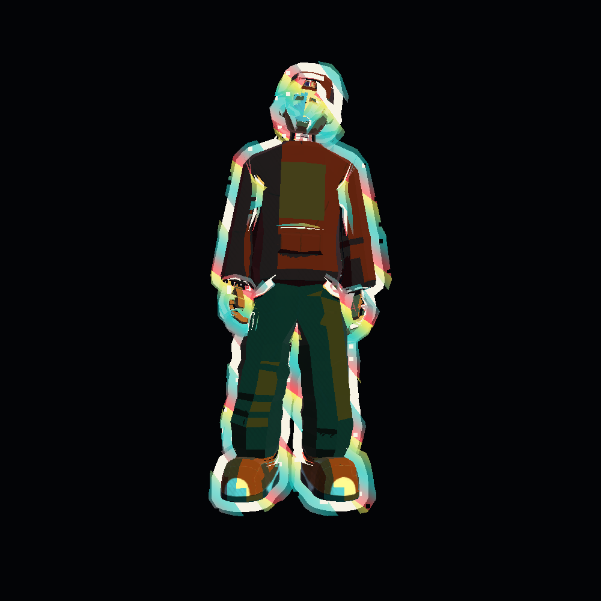
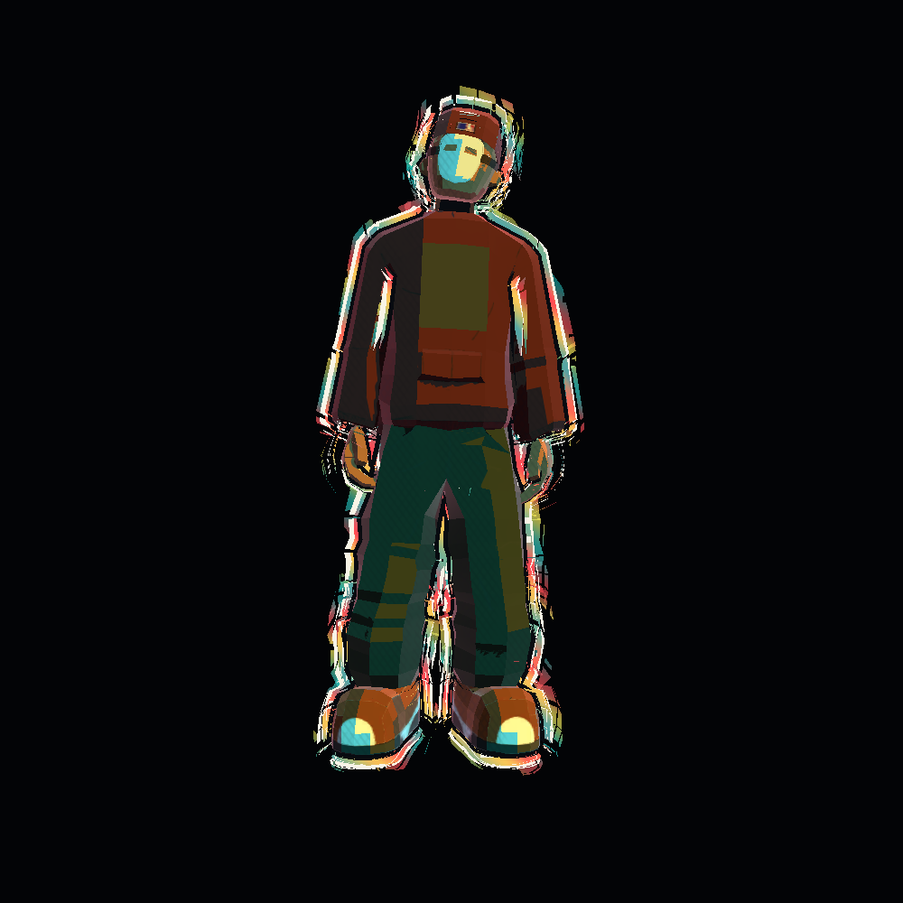
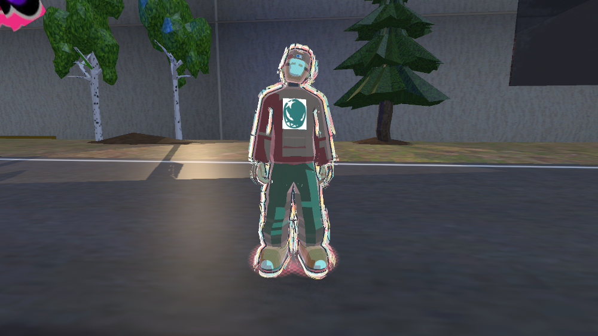
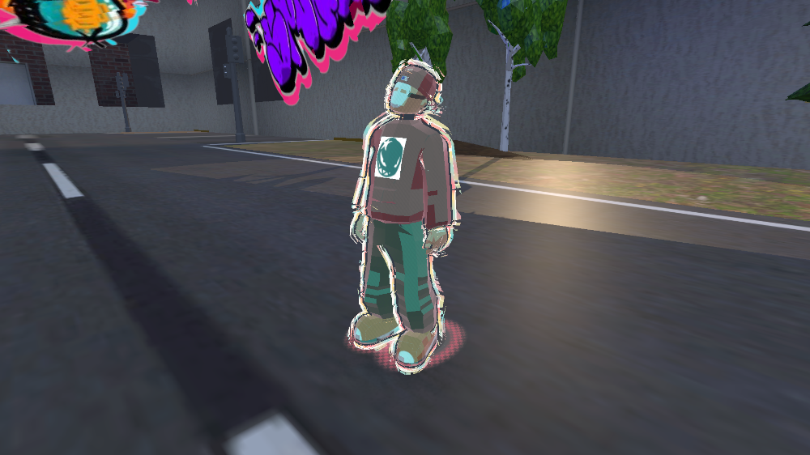
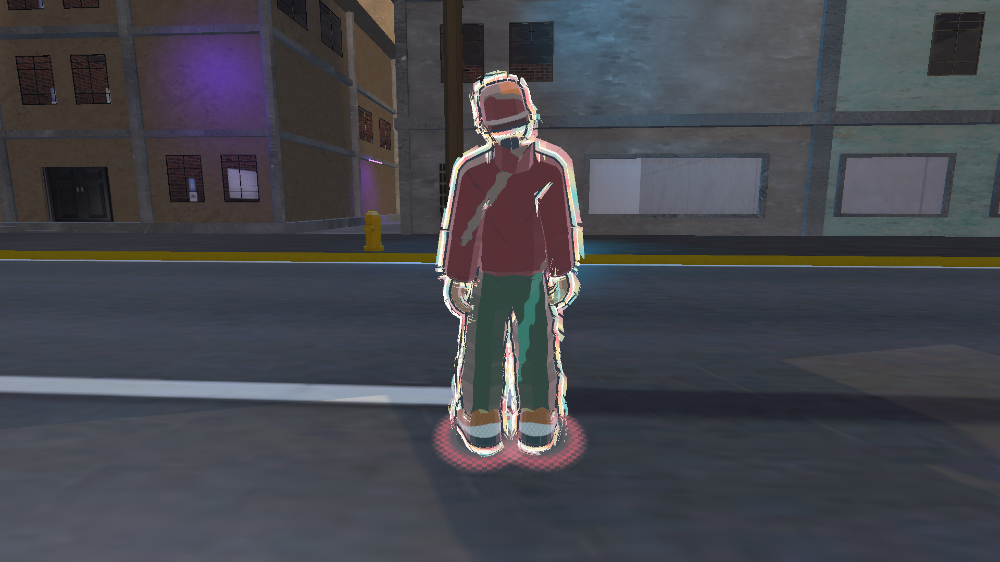

FLOW STATE
El Cartoon original, refinado
Ver la nueva respiración y las ondas en movimiento. Las fotografías inferiores documentan el refinamiento previo.
Se conservan las cuatro capas fragmentadas, el grosor, la paleta emocional y la energía del contorno. Se afinan la respiración, los enlaces de color, la precisión temporal y el filtrado de las transiciones.

Original
Refinado · identidad conservadaLas fotografías muestran instantes distintos del contorno animado. El fondo uniforme permite leer las capas y comparar el volumen; las vistas siguientes muestran el resultado dentro de Gameplay.

Play Mode · frente
Play Mode · tres cuartos
Play Mode · espaldaCompilación verificada con Unity CLI. Cuatro tests aprobados. Animación idle comprobada con avance real de frames en GTX 1650. Sin medición de FPS en una build.
Detalle de cambios, verificación y respaldo